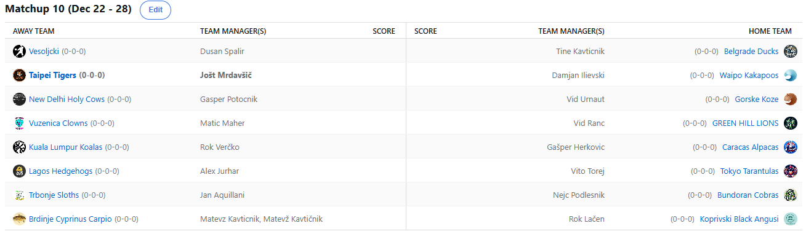

SEZONA 25/26
- Pravila in sistem tekmovanja
- Matchup1 (Oct 21 - Oct 26)
- Matchup2 (Oct 27 - Nov 2)
- Matchup3 (Nov 3 - Nov 9)
- Matchup4 (Nov 10 - Nov 16)
- Matchup5 (Nov 17 - Nov 23)
- Matchup6 (Nov 24 - Nov 30)
- Matchup7 (Dec 1 - Dec 7)
- Matchup8 (Dec 8 - Dec 14)
- Matchup9 (Dec 15 - Dec 21)
- Matchup10 (Dec 22 - Jan 28)
- Matchup11 (Dec 29 - Jan 4)
- Matchup12 (Jan 5 - Jan 11)
- Matchup13 (Jan 12 - Jan 18)
- Matchup14 (Jan 19 - Jan 25)
- Matchup15 (Jan 26 - Feb 1)
- Play-in (Feb 2 - Feb 22)
- Playoff 1 (Feb 23 - Mar 8)
- Playoff 2 (Mar 9 - Mar 22)
- Playoff 3 (Mar 23 - Apr 5)
2025/26 - Fantasy Koroška - sezona 9
MATCHUP 10 (Dec 22 - Dec 28)
Recap: MATCHUP 10
Dve tretjini rednega dela sta že za nami in tisti, ki kaj še nameravajo ukreniti s svojimi ekipami, je zdaj skrajni čas za to. V tem božičnem
času smo trošili ponovno nekoliko več kot prej in sicer 174$.
Glavni junak najnovejše otroške pravljice, po naših informacijah bo naslov: »Prigode Posranka Posrankiča«, Nejc Podlesnik, je še naprej ostal neporažen.
Tokrat je prekosil svoje dosedanje prigode in v zadnjem trenutku nekako uspel nadoknaditi tromestno razliko in premagati sicer do tega tedna
drugo najbolj vroče moštvo, Trbonje Sloths. Slednji so se nekoliko zakulkalirali pri aquisitionih in to jih je na koncu drago stalo. Donke
je raje gobcal s Shroderjem, kot dal 50 točk in grenek poraz je tu. Nejc je s tem še nekoliko izboljšal rekord za najboljši štart v sezono,
je pa tudi novopečeni član prestižnega kluba managerjev, ki se lahko pohvalijo z 10 zaporednimi zmagami.
Vsekakor zmagovitega niza ne bo prekinil naslednji nasprotnik – Verati. Edino kar je vsaj nekaj časa dobro kazalo Veratiju ta teden je bil vesoljčkek na xmas night,
pa še tam se je ZestyQueen KAT odločil, da denarja za Verčkija ne bo. Je pa zato kar sam v slogu Božička ta teden zmago s svojimi Koalami
podaril Karakaškim Alpakam, ki so jo, roko na srce, tudi kar krvavo potrebovale. Herku je zelo dobro del tak sprehod od matchupa, kajti
nikakor niso bili v dobri formi pred tem. Poleg tega darila, pa je Božiček Gašperju prinesel še eno darilo – ta teden se bo lahko znašal
nad Indijci, ko ga čakajo Sv. Krave. Izgleda je moral biti Herko zelo priden.
Edini še večji blowout tega tedna je bil, kakopak, v matchupu z Duletom. Le kaj se je zgodilo s tem nekoč velikanom Koroškega fantasyja, ki je v svojih tekmecih
iz tedna v teden vzbujal strahospoštovanje? ESPN-ov algoritem mu pripisuje le še 33% možnosti za uvrstitev v končnico. Če povemo drugače:
Kvota, da bo Dule na piknik prinesel gajbo bi zdaj bila 1.49. Lahko izkušeni Dušan vendarle najde pravi recept in se zavihti vsaj nad Svete Krave?
Tokrat se je mimo Duškota sprehodil Tinki Binki. Nimamo kaj dosti povedati, še največji fantasy fanatiki so namreč obračun nehali spremljati
že v ponedeljek.
Kot gost bo menda v novi otroški pravljici nastopal tudi Vito Torej. Baje bo ime njegovega lika »Pojncagenst« in bo zelo majhen :D :D :D. Le en sam poraz kljub temu,
da v povprečju njegovi nasprotniki zabeležilo pičlih 911 točk je vsekakor kriminal in moral bo Vito povedati, katerim bogovom je pred sezono
doniral, da so mu tako naklonjeni. No, je pa vsaj človeštvu naredil uslugo ta teden in premagal Jurharja. Kot smo najavili že v ponedeljek,
podobno kot Branik, tudi Fredi ni imel za burek. Za nameček se je v ponedeljkovo jutro zbudil še z nič kaj prijetnim pogledom, polnim DTD-jev in
O-jev in nič kaj dobrega se mu ne obeta niti ta teden.
Z lahkoto je do nove zmage prišel tudi prvi drifter Avstrijske zimske sezone – Lačenovski. Tokrat je nabil OderMAT-a Kavtičnika v njegovi najslabši disciplini … fantasyju.
Fant, ki je raje šel na Plestenjaka kot na Grašona si česa drugega kot nove točke v stolpcu porazov niti ni zaslužil. Lačna smo sicer želeli
dobiti za izjavo, a je fant že popolnoma z glavo pri silvestrski večerji in žal ni imel časa. Je pa imel čas podpisati Tatuma in videli bomo,
ali mu bo letos prinesel kakšno fantasy točko ali ne.
Potezo tedna je pa storil Vid Urnaut. Slednji je s trejdom sredi matchupa dobesedno prišel do zmage. Kawhi je namreč z neverjetno predstavo, predvsem včeraj, ko je
prekosil celo Jokiča in ima zdaj v rokah letošnji rekord – 103 fantasy točke – Vidu prinesel sladko in pomembno zmago. Padel je Geps in videli
bomo, ali je to prepričalo Gašperja, da je trejd lahko dobra stvar in bo odprl svoje DM-se še komu drugemu kot Jurharju. Kako kaj Kalkbrenner,
Geps? Zdrav?
Rjovejo pa še naprej Tigri. Tretja zaporedna zmaga za Joletove varovance in zasluženo se že trese liga. Tisti posranci, ki so se tega zahtevnega matchupa rešili v
prvi polovici sezone so lahko zelo hvaležni, a kaj ko za vsako rit raste šiba in lahko, da bo udarila šele v playoffu. Ne more biti sicer
zadovoljen s Quentinom Crimesom, ki izvaja kriminal nad košarko in očmi svojega novega lastnika v zadnjih dveh tekmah. A dajmo času čas.
Matchup je bil sicer precej zanimiv, kajti tudi Ilija se ni dal in je bil v nevarnem območju za napad iz ozadja, a mu je vendarle nekaj
zmanjkalo. Tudi zanj se sprašujemo, ali se ta dolgoročni hold v IR-ju izplača ali ne, a kot vedno bomo odgovor dobili šele s časom. Sicer
pa je Dili vendarle že tako rekoč na varni strani, saj mu v kar 98% vseh scenarijev uspe priti v končnico, ki jo bo tako okusil šele prvič!
Ostal nam je le še zadnji, a zato nič manj zanimiv matchup med vzhajajočimi zvezdami iz Vuzenice in strmo padajočimi, nič več rjovečimi Levčki z Zelen brega.
Slednji so po zares udarnem začetku v krizi, zdaj so izgubili še Reavesa, za nameček pa jih čaka še obračun z drugo najbolj vročim moštvom lige.
Lahko ta niz Ranko še prekine? Na drugi strani je Maher lahko zelo zadovoljen, tole je bila druga zaporedna zmaga in klasično se pozicionira
tja nekam na sredino lestvice, pred začetkom končnice. Lahko na realna tla postavi Tarantele?
Ta teden nas čaka nekaj pomembnih obračunov, predvsem nas zanima boj za gajbo, ko pred-pred-zadnji vlak lovita Dule in Kavt. V obračunu, ki je vsaj po številu zmag
in po sorti maskote vsekakor derbi, pa se bosta udarila Ranko in Jolko. Prav tako bo pestro v Koprivni, kamor prihajajo Corgiji, ponovno pa
pričakujemo tudi kar nekaj blowoutov, razsaja poleg bolezni tudi epidemija avspuharjev, ki je že prevzela kar nekaj moštev lige.
Best memes